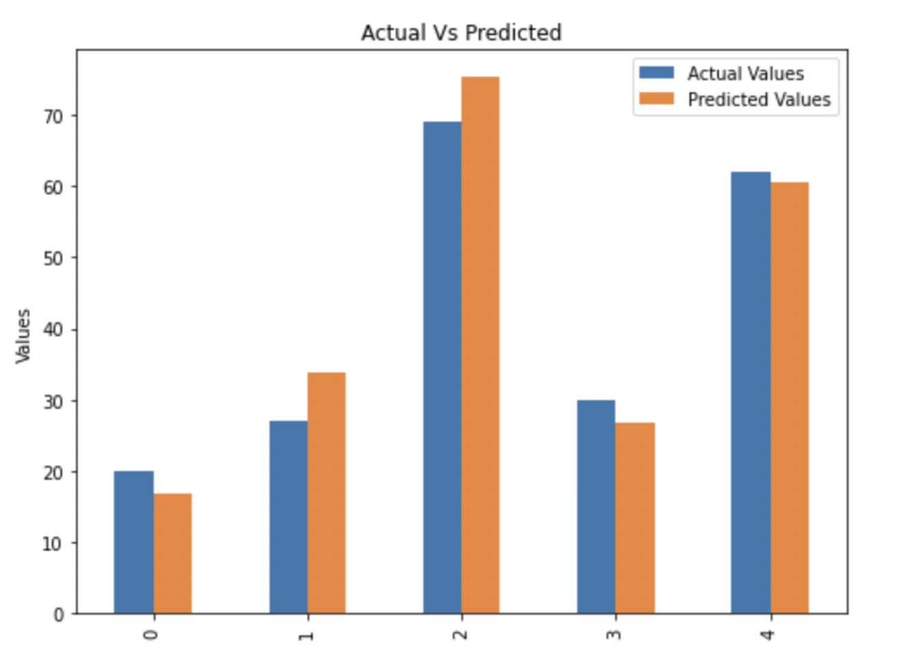
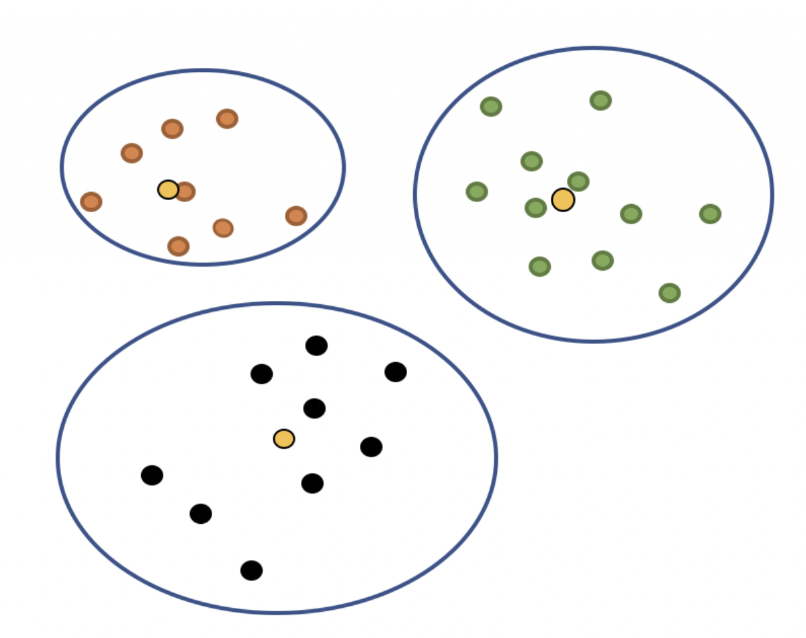

My Blog
I started writing articles on Medium because I love to express myself.
My articles motivate me to learn more so that I can share my knowledge online. I also write about my personal life from time to time.
Check it out to get to know me more!
What's it About?
My Blog is like my professional journal. I write about my progress, especially the progress in my Data Science Journey. I started as a completely naive undergrad student doing my major in Math, with no formal programming background. I've documented each step I've taken towards making myself familiar with the world of Data, Machine Learning and Artifical Intelligence, and I've been published in leading Medium Publications like The Startup and AI in Plain English. You can expect to read about all the projects I've worked on, all the concepts I've learnt, and my entire journey in the field of data science till now! I also write about my personal life so that anyone like me, who wishes to transition into data science, can know that it is most definitely possible! Do check it out!
Most Popular (Published)
Exploring Machine Learning Algorithms — Simple Linear Regression
As we dive into the world of Machine Learning and Data Science, one of the easiest and fun ways is to explore the various machine learning algorithms. They can be intimidating, especially if you’re just starting out. One of the simplest algorithms that we can explore with very basic knowledge of data science is the Linear Regression algorithm. In simple linear regression, we try to model the data using a straight line that best fits our data. We then make the predictions using this line of best fit. Read More...
Basics of Machine Learning: K-Means Clustering
As we dive into the world of “Unsupervised” Machine Learning, we will encounter problems that would require us to cluster the data available to us. This means we have to divide the data into clusters based on their level of similarity. K-Means Clustering allows us to do just that. As the name suggests, the algorithm makes use of the “means” of the data to cluster them. Here “K” is just the number of clusters we want our data to be divided in. We have to choose the value of “K” ourselves, and there are ways in which can select the right “K” for our data. Read More...
Technical Articles
| Length | Name | Read |
|---|---|---|
| 5 mins | Scraping Images Using Selenium [Published] | Read Now |
| 7 mins | Applying 7 Classification Algorithms on the Titanic Dataset [Published] | Read Now |
| 6 mins | Simple Text Web Scraping with Deployment | Read Now |
| 7 mins | Here’s Why You Need to Learn Linear Algebra for Data Science [Published] | Read Now |
| 7 mins | Data Science Basics — How to find an Outlier? | Read Now |
| 6 mins | Basics of Machine Learning: K-Means Clustering [Published] | Read Now |
| 9 mins | Battle of the Neighborhoods - IBM Data Science | Read Now |
| And More... | ||
Personal Life
| Length | Name | Read |
|---|---|---|
| 8 mins | How to get into St. Stephen’s College — The full admission process! | Read Now |